分治¶
说实话分治解决的就是一个多问题拆成小问题复杂度的问题
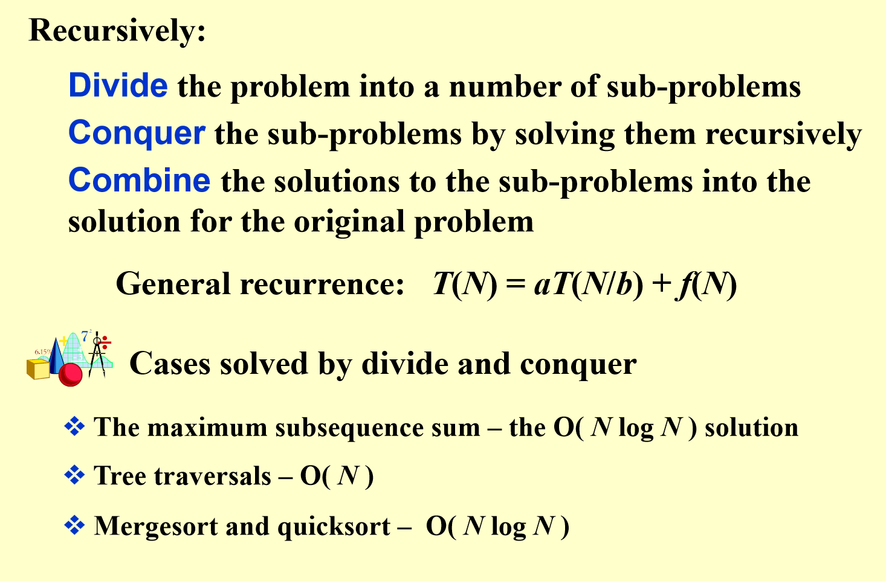
例子：最小距离的问题¶
平面上有n个点，求任意两点之间的最短距离
我们可以先按照x坐标进行排序，然后从中间分开
这样左边右边n/2个点，求两边的点最短距离，再求跨过中间的点的最短距离
问题：跨国中间的点的距离计算为什么是O（n）¶
因为我们可以优化算法 我们只需要以中间向两边延申a（a是左半边和右半边的距离的最短值）
只用算这个范围内的
但这个范围也有可能包括所有点
这个时候我们考虑y
我们知道如果y的距离大于a，那么也不用考虑了
所以其实我们只需要一个点周围的一个长方形 长度为2a 宽度为a
那我们只要证明 这个长方形内的点的数量为常数
这是很好想的 因为最小距离就是a 所以你点数过多 肯定会最小距离小于a。
而且这里我们只需要对y排个序 就可以很快的找到（这里需要记录谁在strip里面 之后组成一个新数组）
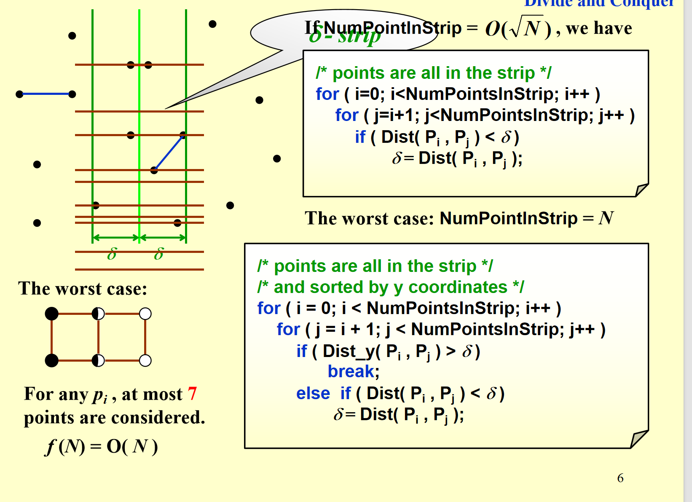
复杂度证明¶
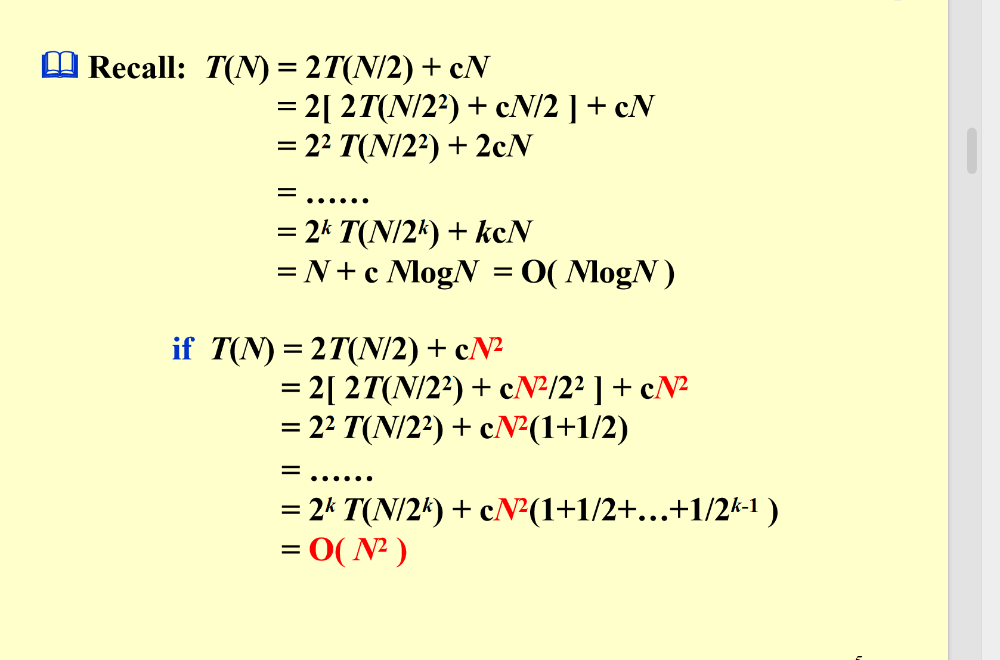
现在进入真正的分治学习¶
说白了 分治的公式就这样一条
T(n) = aT(n/b) + f(n)
请你解出这个T（n） 同时我们不是很考虑n比较小的时候对不对 我们是对于大n来说的
那我们有三种方法
数学归纳法¶
这个方法说白了 就是猜答案之后证明他
例子¶
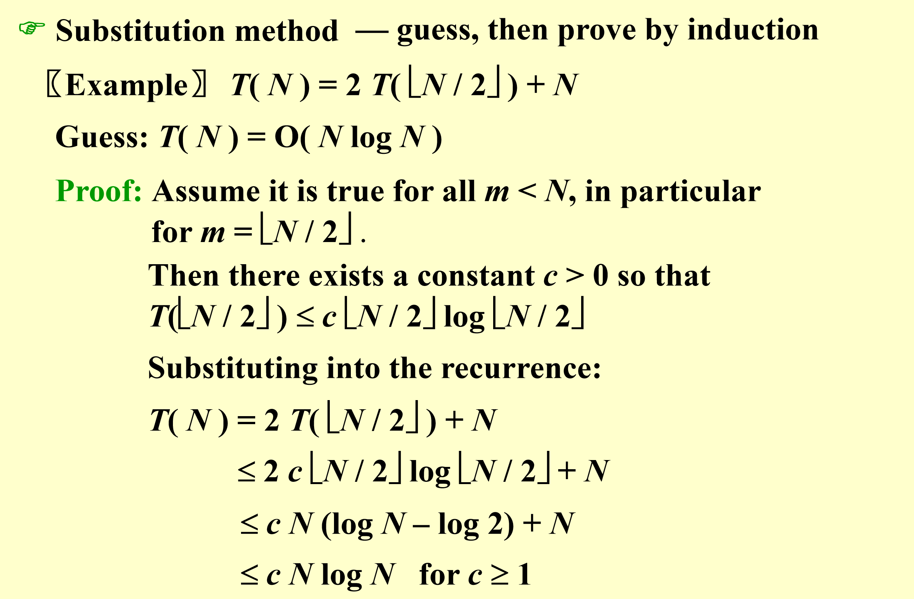
这里有两个注意点 1.这个式子对N=1不成立 但我们不需要担心 我们可以从N=2开始推导
2.c的选择其实是可以任意的 只取决于你从谁开始
例子2 猜错了怎么办¶
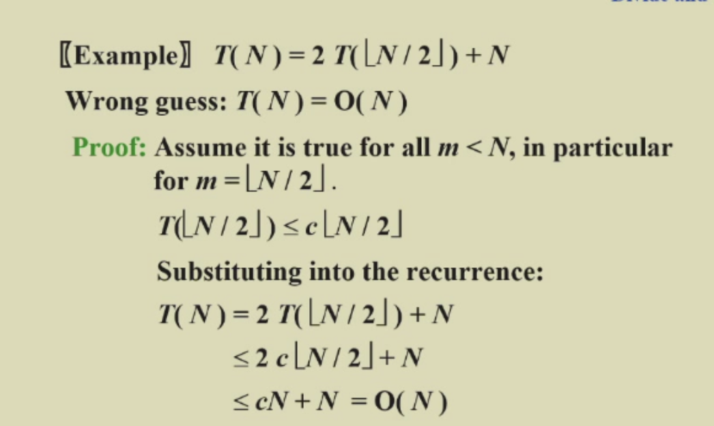
你看这里 我们猜O（n）好像也对
但问题在哪 就在于我们要一直保持这个c不变！ 因为这个多出来的n积累起来 结果是个n平方的，会让你下一项数学归纳法无法进行
总结¶
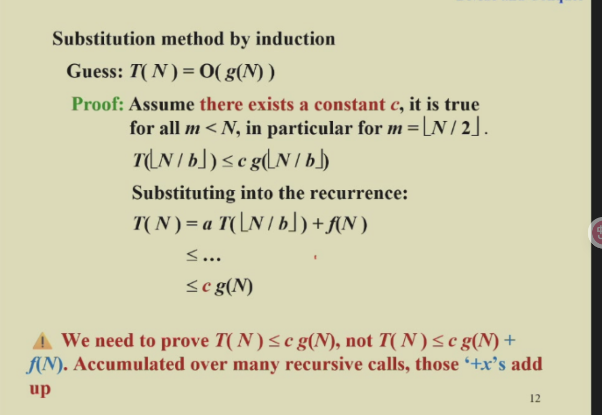
分治树法¶
这个方法可要好好学 好好看 他和主定理关系不小
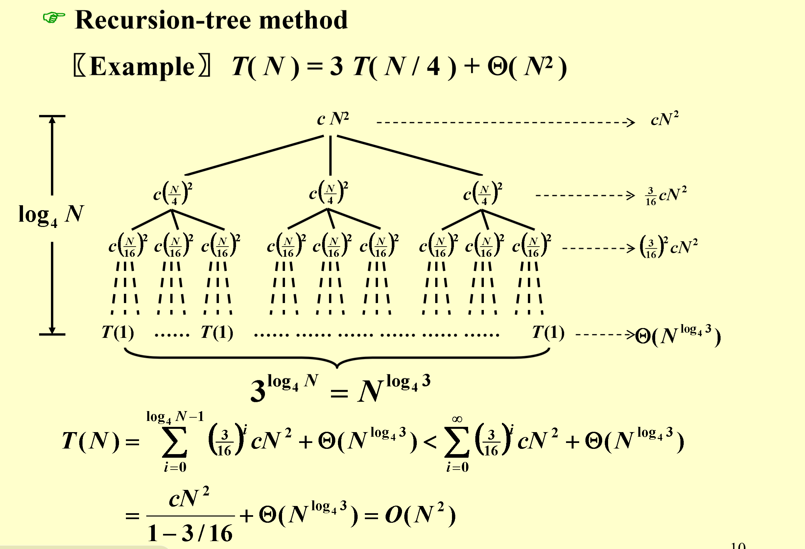
其实就是画出来
前面几列的时间消耗就是f（n）相关的 最后是所有最终子节点的数量（理解为常数项）
而且我们这里可以发现 基本总时间取决于几个事情
前面logn层的时间开销是递增还是递减（等比）¶
从第一个例子 发现是个递减等比数列 那么基本就是取决于第一项
如果相同的话 那么时间就是logn*fn
如果递增的话 不太好估量
最后一层和前面的对比¶
如果发现是最后一层的数量占主导 那时间取决于最后一层
反之 那就还是前面那个讨论的情况
特殊情况¶
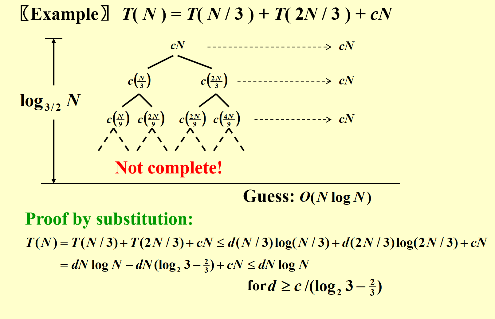
这里有个特殊的 画出来 只能大概明确方向 最后还是要靠数学归纳法
主定理¶
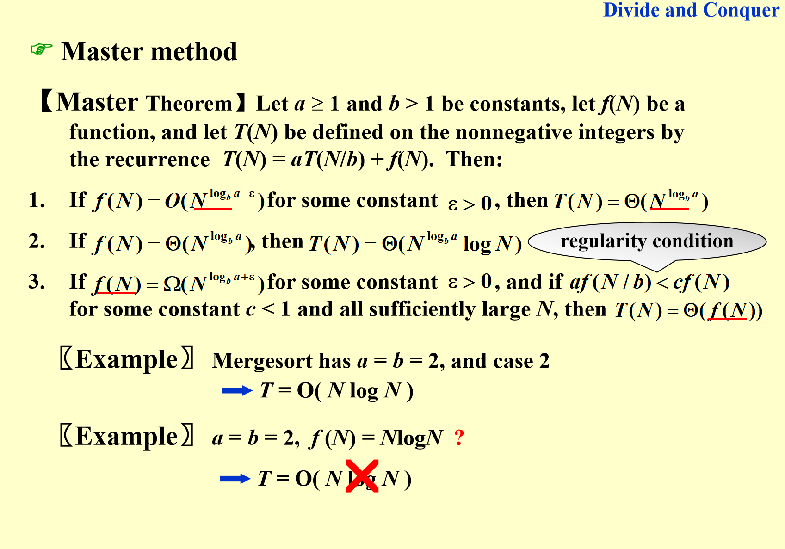
好了 现在请出大名鼎鼎主定理
几个注意事项 1. 主定理主要就是讨论f（n）和 ab的关系 2. 之后就是我上面说的三种情况。 3。定理三的时候 要满足那个a(f(n/b))小于cf(n) 这样才能等比数列递减
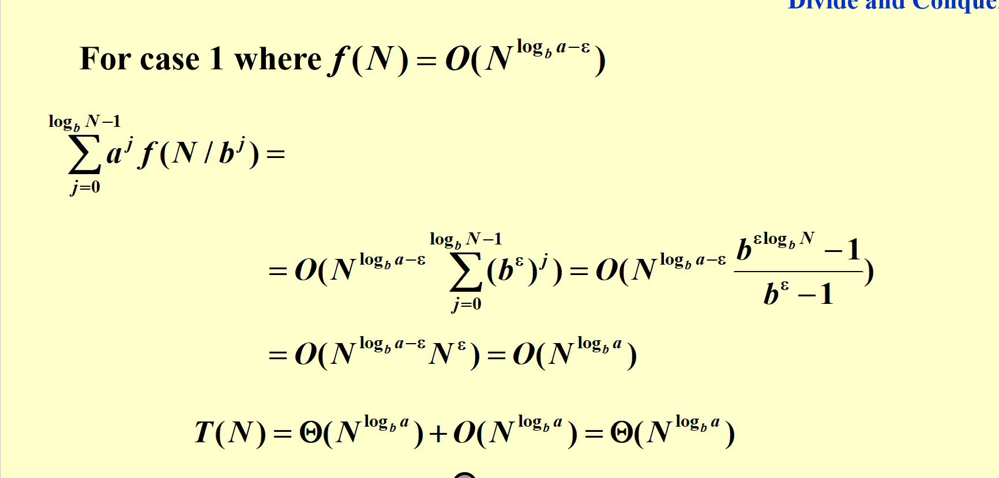
这里有个证明
第二种形式¶
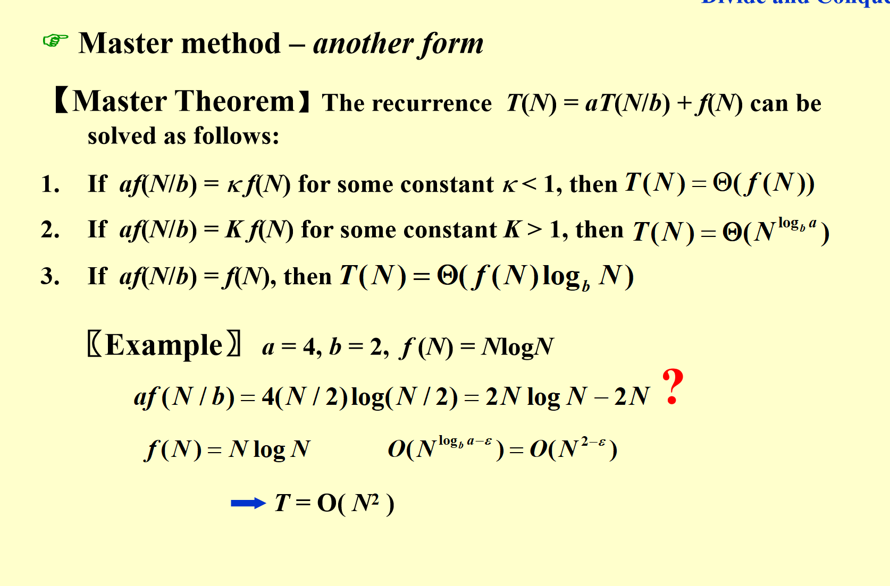
这个定理比第一个弱 就是有些情况他判断不了 但1可以
第三种 对数版本¶
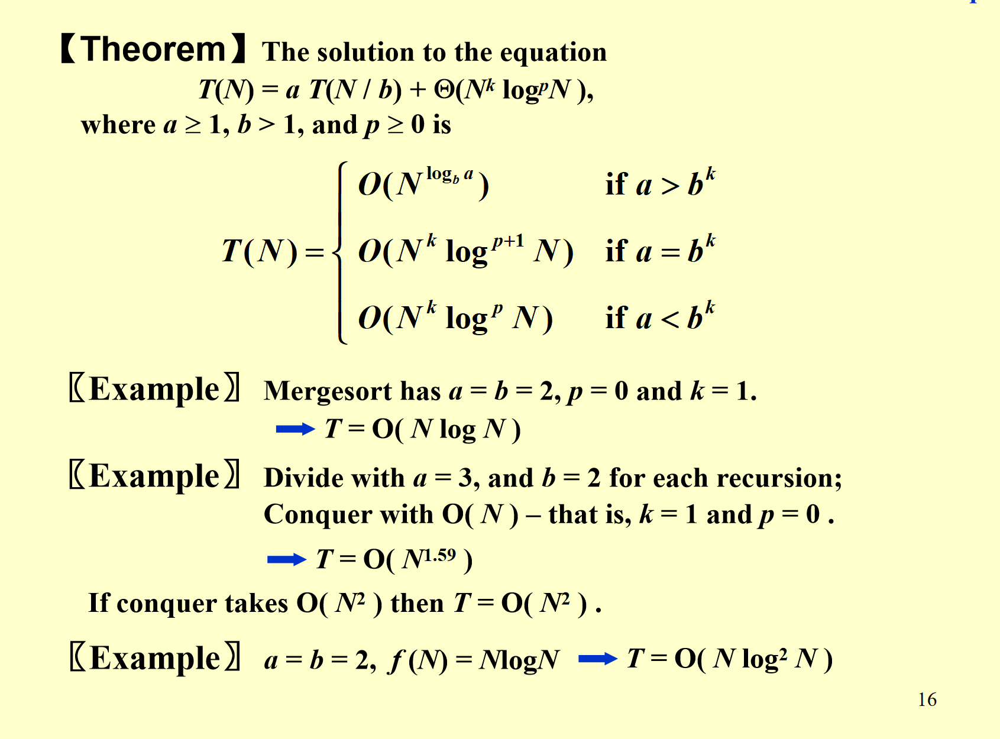
其实和之前的是一样的 只不过专门解决fn有对数